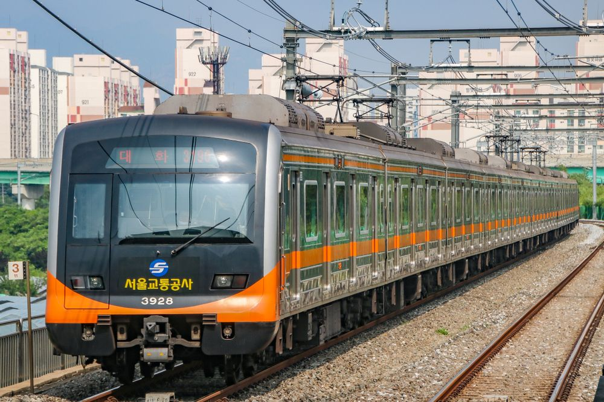
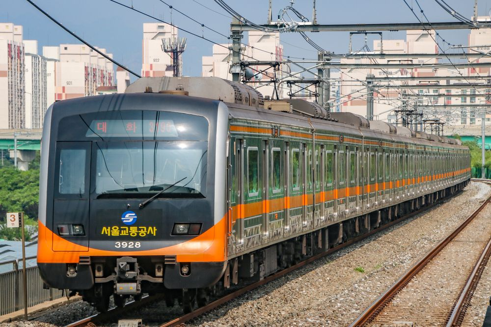
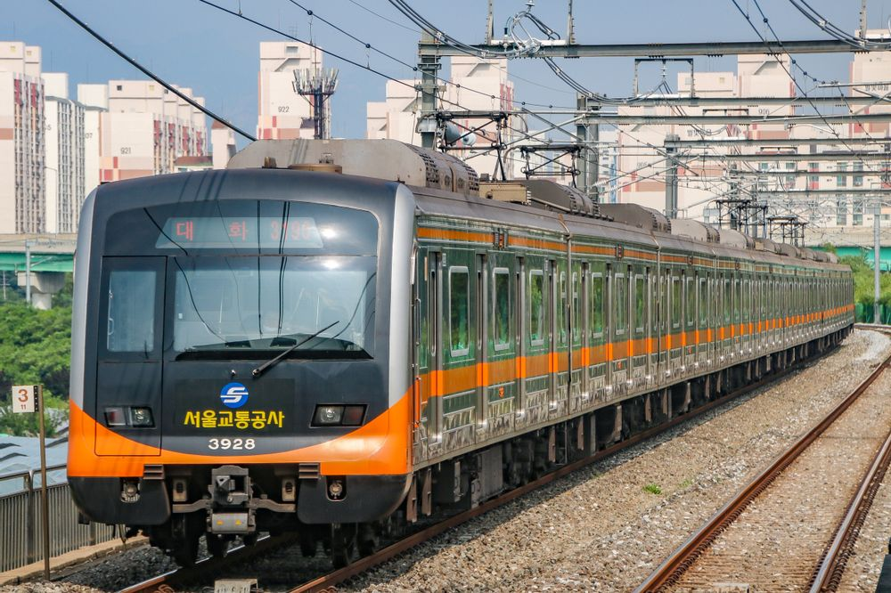
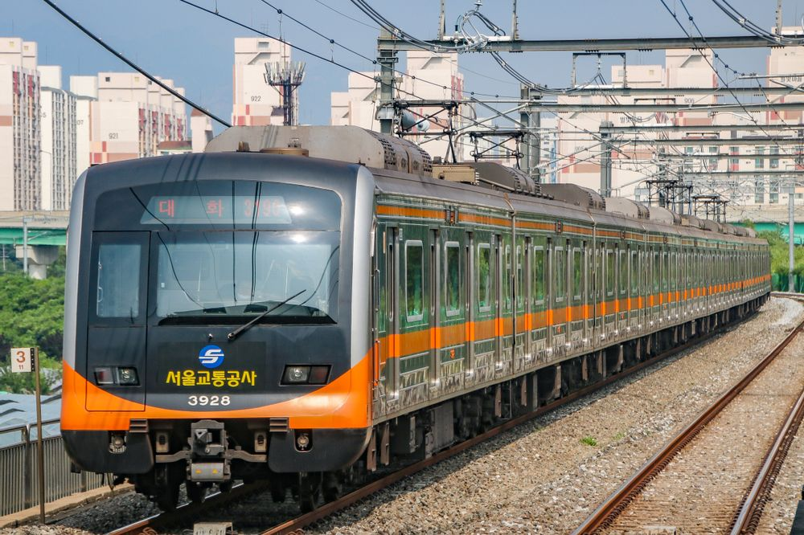

 

기점:소요산
종점:인천, 광명, 서동탄, 신창
수도권 전철 1호선(首都圈 電鐵 1號線)은 경기도 동두천시에 있는 소요산역부터
인천광역시 중구에 있는 인천역, 충청남도 아산시에 있는 신창역, 경기도
광명시에 있는 광명역 그리고 경기도 오산시에 있는 서동탄역 등을 잇는
수도권 전철의 운행 계통이다. 한국철도공사와 서울교통공사가 공동
운영한다. 대한민국 최초 지하철이자 최초 광역철도이다. 경원선,
서울 지하철 1호선, 경부선, 경인선, 경부고속선, 병점기지선,
장항선 등의 여러 노선에 걸쳐 운행되며, 수도권 전철 1호선이라는
명칭은 이들 노선에서 운행되는 열차에 대한 통합된 명칭이다. 안내
등에 사용되는 노선 색은 남색이고, 색의 뜻은 미래다. 또한 서울 지하철
1호선의 과거 색상인 빨간색의 뜻은 이웃과 서울의 이미지를 담고있는
기억이다. 현재 수도권 전철 노선 중 가장 긴 거리를 운행하는 노선이다.
통행방향은 어디서든 좌측통행이다.